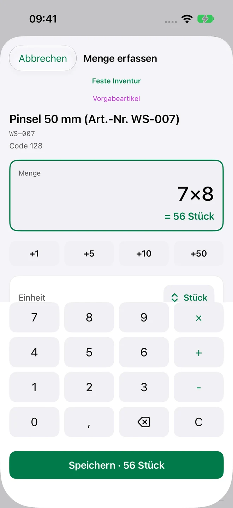
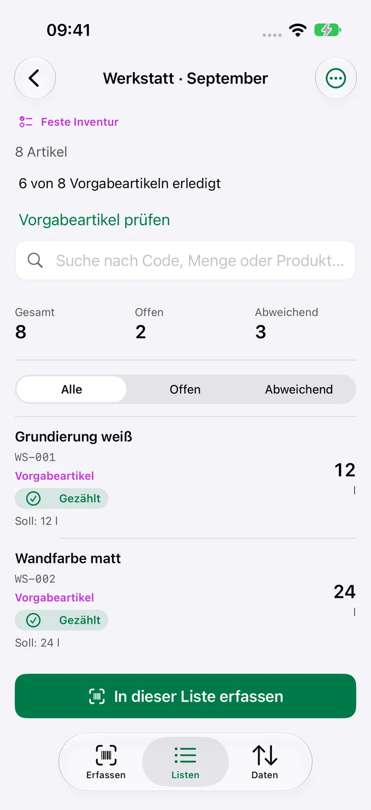
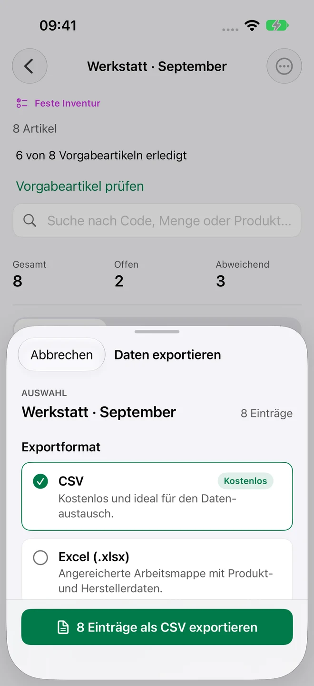
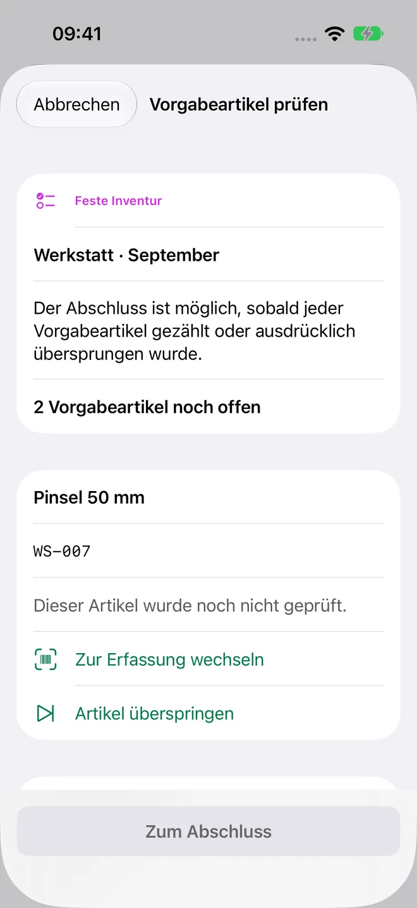
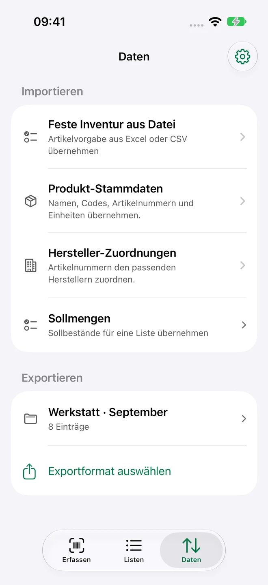
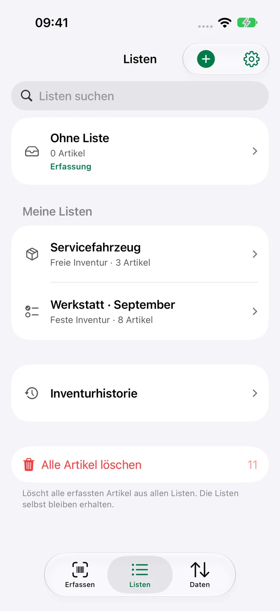
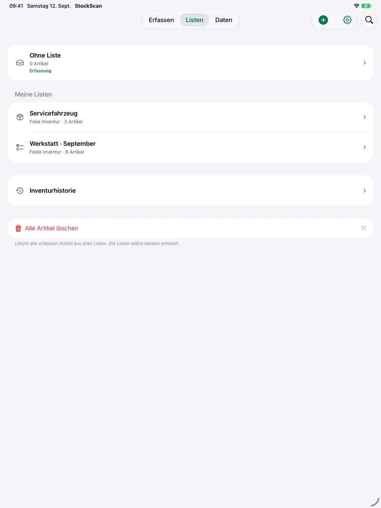

Erfassen01
Scan rein.
Menge dazu.
Scanne einen Barcode oder gib die Artikelnummer ein. Rechne Gebinde direkt aus und speichere Menge, Einheit und Kommentar.

Vom ersten Scan bis zum fertigen Bericht. Zähle, was da ist. Behalte im Blick, was fehlt. Und mach aus deinem Bestand eine klare Liste.
1 aktive Inventur · 100 Artikel · CSV-Export kostenlos

Drei klare Bereiche begleiten dich durch deine Inventur: Erfassen, Listen und Daten.
Scanne einen Barcode oder gib die Artikelnummer ein. Rechne Gebinde direkt aus und speichere Menge, Einheit und Kommentar.

Organisiere deine Bestände. Mit fester Vorgabe erkennst du offene Artikel; Pro ergänzt die Soll-/Ist-Auswertung.
Artikelstamm importieren, Inventur abschließen, Bericht teilen. CSV ist kostenlos, angereicherte Excel-Berichte gibt’s mit Pro.

Jede Inventur beginnt anders. Starte direkt mit den Artikeln vor dir – oder übernimm eine feste Artikelvorgabe aus Excel, CSV oder TSV.
Scanne Vorgabeartikel in beliebiger Reihenfolge. Zusätzliche Artikel werden gesondert gekennzeichnet.
Vor dem Abschluss zählst du offene Vorgabeartikel nach oder überspringst sie ausdrücklich. Gezählt mit null bleibt davon unterscheidbar.
Setze die Zählungen zurück und verwende dieselbe Vorgabe erneut. Eindeutige Stammdaten-Treffer ergänzen fehlende Namen, EANs und Einheiten.


Ersatzteile im Lager, Material in der Werkstatt oder Ausstattung im Servicefahrzeug: Erfasse deinen Bestand dort, wo du ihn brauchst. Auch ohne Internetverbindung.
7 × 8 statt 56 einzutippen. Mengenberechnung, eigene Einheiten und Kommentare sind direkt in der Erfassung erreichbar.
Importiere Produkte sowie Hersteller- und Lieferantenzuordnungen. Vor der Übernahme prüfst du die erkannten Daten.
Bewahre den gezählten Stand in der unveränderlichen Historie. Bestehende Daten bleiben auch ohne Pro sichtbar.
Fast Scan ergänzt direkte Wiederholungszählungen und einstellbare Zählschritte für deine Gebinde.
Live Activities zeigen den Inventurfortschritt auf dem Sperrbildschirm und in der Dynamic Island unterstützter iPhones.
Intelligente Spaltenerkennung mit Apple Intelligence auf unterstützten Geräten, wenn verfügbar. Die normale Erkennung bleibt erhalten.
Echte Ansichten von StockScan 1.4 – mit Beispieldaten aus einer Werkstatt. Auf iPhone und iPad.



Nutze die native iPad-Oberfläche für deine Listen. Auf der Apple Watch zählst du einen Artikel kostenlos; Pro bringt ganze Inventurlisten ans Handgelenk. Bei unterbrochener Verbindung werden Änderungen bis zur Bestätigung durch das iPhone zwischengespeichert.
iPhone · iPad · Apple WatchEine vollständige Inventur kostenlos. Mehr Möglichkeiten, wenn du sie brauchst.
Kostenlos laden und direkt loszählen.
Als Monats- oder Jahresabo in der App erhältlich.
Preise und ein gegebenenfalls verfügbarer Probezeitraum werden vor dem Kauf im App Store angezeigt. Abos verlängern sich automatisch und sind über dein Apple-Konto kündbar. Frühere Käufer der kostenpflichtigen App behalten dauerhaft Pro. Deine vorhandenen Daten bleiben ohne Pro lesbar und als CSV exportierbar. EULA · Datenschutz
Du brauchst kein StockScan-Konto. Deine Kerninventur arbeitet lokal – ohne Werbung und ohne Tracking in der App.
DatenschutzErfasse deinen Bestand ohne Internet. Lokale Inventurdaten bleiben die Grundlage deiner Arbeit.
Mit Pro synchronisierst du Inventuren freiwillig über deine private iCloud-Datenbank zwischen eigenen Apple-Geräten. Importierte Stammdaten bleiben lokal.
Apple Family Sharing teilt die Pro-Berechtigung mit deiner Familie. Es teilt keine Inventuren oder private iCloud-Datenbank.
Eine aktive Inventur mit bis zu 100 unterschiedlichen Artikeln, freie oder feste Erfassung, Mengenberechnung, Stammdatenimport, Abschluss, Historie, unbegrenzter CSV-Export und der Apple-Watch-Einzelzähler.
Bei einer freien Inventur erfasst du die Artikel, die du vorfindest. Eine feste Inventur beginnt mit einer importierten Artikelvorgabe. Jeder Vorgabeartikel muss vor dem Abschluss gezählt oder ausdrücklich übersprungen sein. Zusätzliche Artikel werden gekennzeichnet.
Ja. Importiere Produkt- und Herstellerdaten aus XLSX oder CSV. Feste Artikelvorgaben können zusätzlich als TSV vorliegen. CSV-Exporte sind kostenlos und unbegrenzt; angereicherte Excel-Berichte benötigen Pro. Numbers-Dateien exportierst du vorher als XLSX oder CSV.
Die Kerninventur funktioniert offline. Käufe, Wiederherstellungen und die freiwillige iCloud-Synchronisierung benötigen eine Verbindung zu Apples Diensten. Watch-Zählungen werden bei unterbrochener Verbindung zwischengespeichert.
StockScan läuft auf iPhone und iPad ab iOS beziehungsweise iPadOS 18. Die Begleit-App für die gekoppelte Apple Watch setzt watchOS 10 oder neuer voraus. Live Activities, Dynamic Island und Apple Intelligence hängen zusätzlich vom unterstützten Gerät und der Systemverfügbarkeit ab.
Bestehende Inventurdaten bleiben sichtbar und als CSV exportierbar. Für neue Listen und Artikel gelten wieder die Free-Limits. Pro-Funktionen wie XLSX und iCloud-Sync benötigen ein aktives Pro-Recht. Frühere Käufer der kostenpflichtigen App behalten ihren dauerhaften Pro-Zugriff.
StockScan kostenlos laden. Deine erste Liste anlegen. Und loszählen.
Im App Store laden